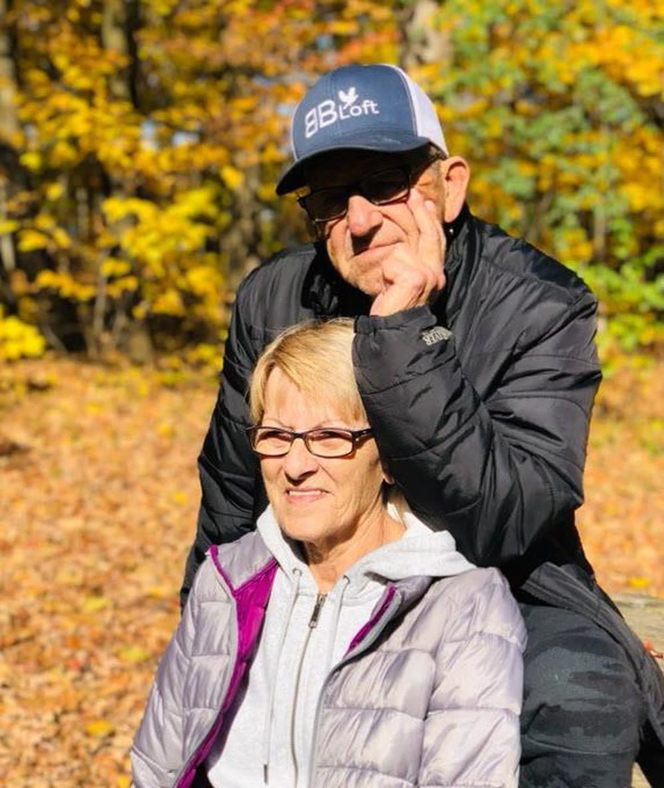
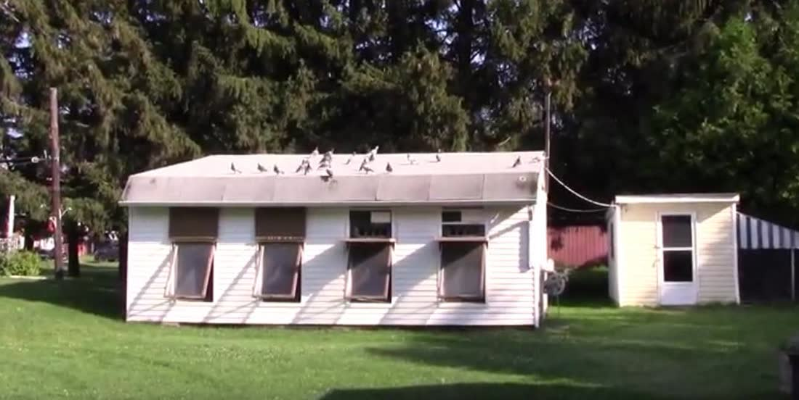

It started under a bridge, with a barn pigeon and a dream.
Bernie was born in 1943 in Hammond, Ontario, to one of the original French-Canadian founding families of the area. His father kept pigeons of every kind — Tumblers, Fantails, Tipplers — and the fascination passed straight from father to son. As a boy, Bernie caught wild pigeons in barns and under bridges, hoping to find one wearing a band.
“Getting one with a band, it was like a miracle. I had a special loft to put the ones with bands, and I was trying to breed from them.”— Bernie
When his father went deer hunting in Chalk River — 125 miles away, long before cell phones — he brought pigeons along, tied a little paper message to a leg, and sent the news home on wings. Every night young Bernie checked the loft for a message. His best bird was #1338. He never forgot the number.
In 1966 he married his sweetheart, Suzanne — and celebrated the only way that made sense: he built a loft. The next year, Canada’s centennial, he flew his first race with the Centennial Homing Pigeon Club. He worked 28 years as a messenger in the House of Commons, delivering messages for members of Parliament by day — while at home, he trained the finest messengers of all.

